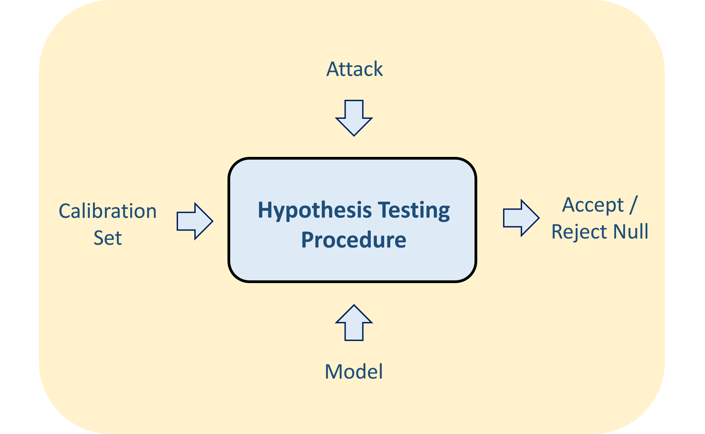
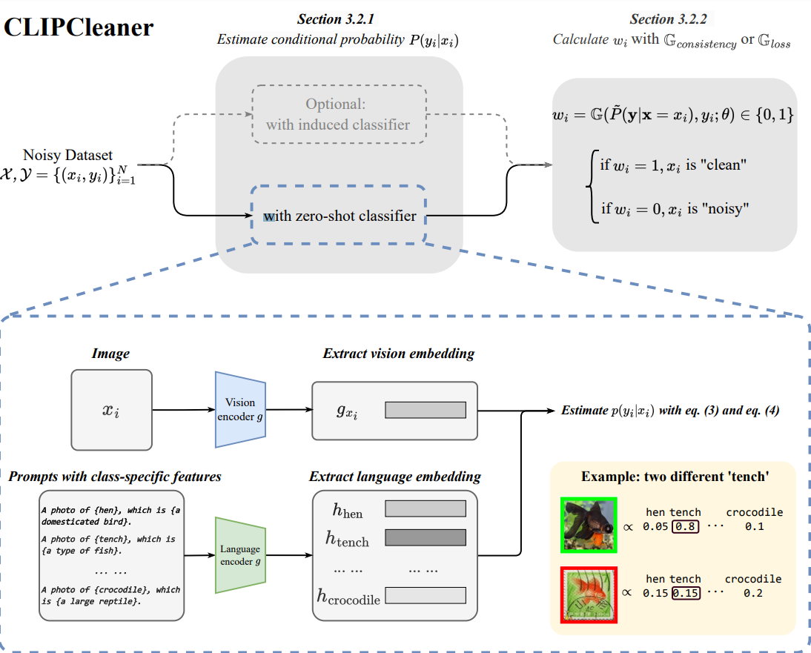
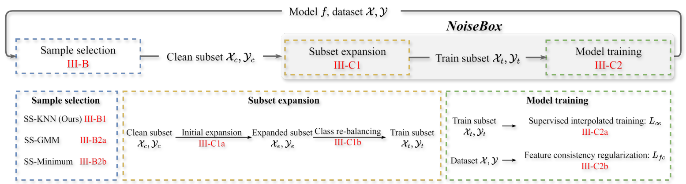
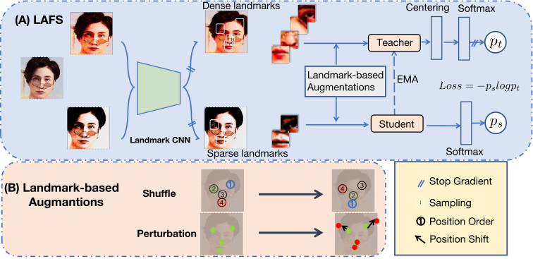

About Me关于我
I am a Lecturer (Assistant Professor) in Machine Learning at Queen's University Belfast. My research centers on building robust, reliable, and secure AI systems, with a particular focus on two core pillars:
- Machine Learning under Imperfect Information: Self-supervised learning, semi-supervised learning, and learning with noisy or coarse labels.
- AI Safety & Alignment: Assessing and enhancing the security and reliability of imperfect models, particularly Large Language Models (LLMs).
Prior to joining QUB, I was a Postdoctoral Research Associate in the Information, Inference and Machine Learning (IIML) Group at University College London. I received my Ph.D. from Queen Mary University of London under the supervision of Prof. Ioannis Patras, and spent time as an AI4Media Junior Exchange Fellow at the University of Trento, working with Prof. Nicu Sebe.
I hold a Master’s degree from Tsinghua University (supervised by Prof. Jin Gu) and a Bachelor’s degree from Nankai University.
I am always open to discussing research ideas and potential collaborations. Please feel free to drop me an email!
我是贝尔法斯特女王大学（QUB）机器学习方向的讲师（助理教授）。我的研究致力于构建鲁棒、可靠且安全的人工智能系统，主要聚焦于以下两个核心领域：
- 不完美信息下的机器学习： 涵盖自监督学习、半监督学习以及噪声/粗糙标签学习。
- 人工智能安全 (AI Safety)： 致力于评估和提升不完美模型（如大语言模型 LLMs）的安全性与可靠性。
在加入 QUB 之前，我在伦敦大学学院（UCL）的“信息、推断与机器学习”课题组担任博士后研究员。我于伦敦玛丽女王大学（QMUL）获得博士学位，师从 Ioannis Patras 教授；期间曾作为 AI4Media 青年交流学者赴特伦托大学与 Nicu Sebe 教授开展合作研究。
在此之前，我本科毕业于南开大学，随后在清华大学获得硕士学位（师从古槿教授进行生物信息学研究）。
我非常欢迎对以上研究方向感兴趣的同学或同行与我联系，探讨前沿学术问题与潜在的合作机会。
Vacancies招生招聘
I am actively looking for self-motivated PhD students and Visiting Scholars to join my research group. Our research focuses on Machine Learning under Imperfect Information (e.g., Noisy Labels, Semi-supervised Learning) and AI Safety.
我目前正在积极寻找自我驱动力强的博士研究生以及访问学者加入我的课题组。我们的研究主要聚焦于不完美信息下的机器学习（例如噪声标签学习、半监督学习）以及人工智能安全（AI Safety）。
c.feng@qub.ac.uk
* Please use the subject line "Prospective Student - [Your Name]" to ensure your email is prioritized. * 请使用邮件主题 "Prospective Student - [您的姓名]"，以确保您的邮件得到优先处理。
Recent News最新动态
Selected Publications代表性论文




Academic Services学术服务
Programme Committee / Reviewer:
程序委员会委员 / 审稿人：
ICML, CVPR, NeurIPS, AAAI, ICLR, ICCV, ECCV, AISTATS, BMVC, ACCV, ICPR, COLM
Journal Reviewer:
期刊审稿人：
IEEE TPAMI, IJCV, IEEE TNNLS, IEEE TCSVT, Image and Vision Computing
Chair & Organizer:
研讨会主席与组织者：
BMVA Symposium on AI Security, ICIRA 2024 Special Session
Memberships:
学术组织成员：
ACM, IEEE, The Computer Vision Foundation (CVF), BMVA